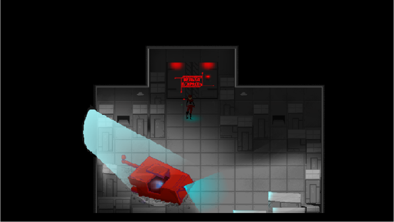

ON DEATH PASS
Агенты Роз и Нефелим наняты одной из крупных корпораций для выполнения миссии по проникновению на защищённый объект конкурента.
Игроку предстоит в лице встроенного ИИ способствовать выполнению миссии и решать возникшие трудности, в том числе принимая решения, от которых зависят жизни как отдельных людей, так и всей их цивилизации.
Почему стоит попробовать игру
Стелс и напряжение: нужно думать, а не только стрелять. Ошибки дорого стоят.

Выбор влияет на исход: решения ИИ меняют судьбы людей и цивилизации.

Короткий опыт на 30–45 минут — удобно пройти демо за один вечер.

Источники вдохновения
Атмосфера стелс-экшенов и sci-fi хоррора: скрытность, давление системы и моральный выбор в мире после катастрофы.
Визуальный язык — тёмный киберпанк с красными акцентами, индустриальные локации и чувство слежки.
Особенности игры
- Стелс-геймплей с элементами хоррора
- Роль встроенного ИИ и ветвящиеся решения
- Короткая кампания демо-формата
- Мрачный сеттинг мира после катастрофы